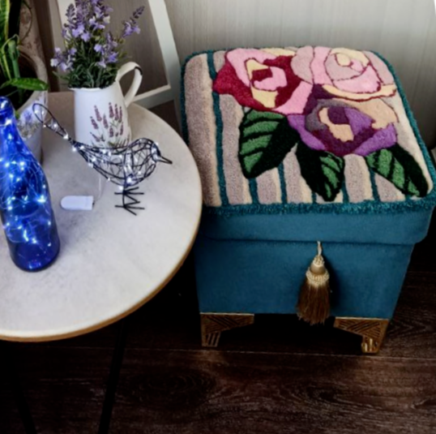
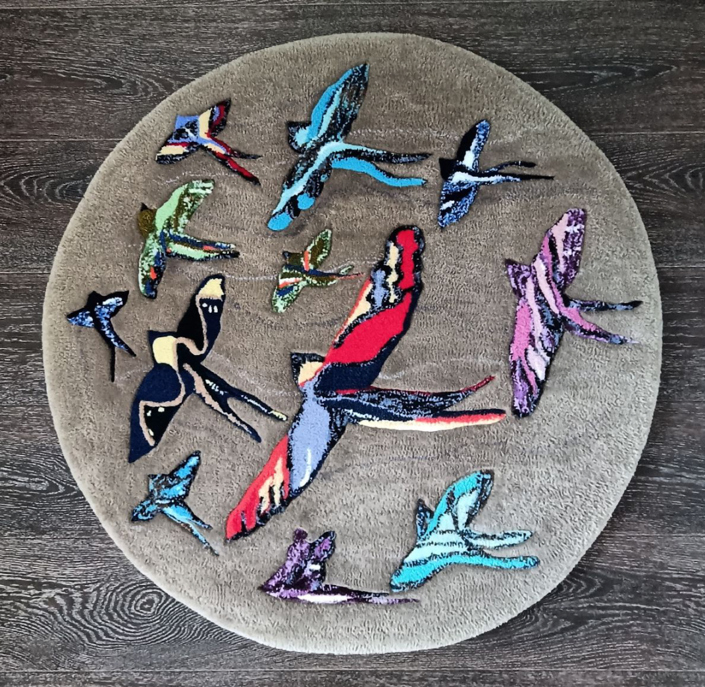
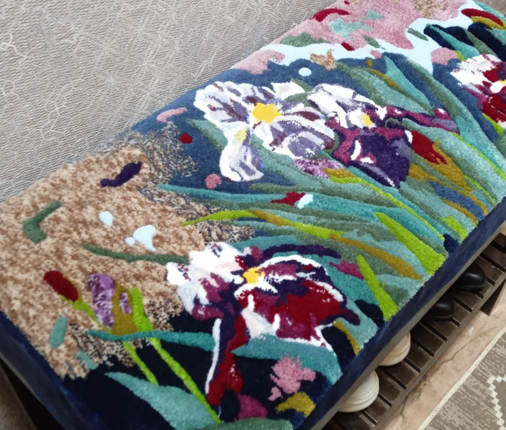

Собери направление
Примерь палитру, расположение и масштаб. Сохрани картинку или опиши свою идею.
Авторские ковры, панно и текстиль.
Ручная работа Ульяны Заббаровой.

Примерь идею. Поменяй цвет и масштаб, передвинь эскиз. Можно загрузить фотографию своего интерьера.
Визуальная идея, не точная примерка по размерам. Эскиз не является фотографией готовой работы.
Реальные работы ULA Арт Студии.
Следующая история может быть твоей.

Ульяна создаёт ковры, панно и текстиль по индивидуальным пожеланиям. От любимой палитры до личного сюжета — идею можно обсудить с мастером.
Посмотреть галерею автора
Примерь палитру, расположение и масштаб. Сохрани картинку или опиши свою идею.
Ульяна уточнит рисунок, материалы, размеры и сроки. Стоимость рассчитывается индивидуально.
Окончательный эскиз и условия обсуждаются лично. Примерочная не оформляет заказ и не принимает оплату.
ULA Арт Студия / Ульяна Заббарова
Казань, Маршала Чуйкова, 1